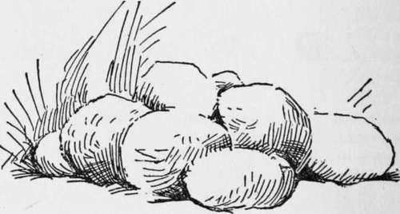
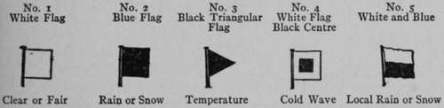
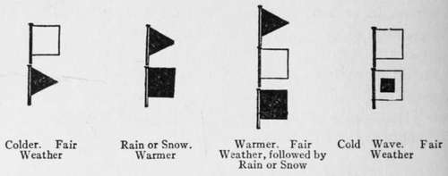
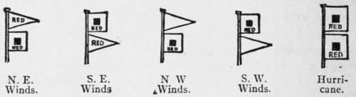

Blazes And Indian Signs. Blazes. Continued
Description
This section is from the book "The Book Of Woodcraft", by Ernest Thompson Seton. Also available from Amazon: The Book of Woodcraft.
Blazes And Indian Signs. Blazes. Continued
Special Signs
A sign much used among the Utes was three flocks of geese flying one way meaning, "All at Peace." But two one way and one the other meant, "Look out! there is a war afoot".
Another Indian sign was a little heap of stones, meaning "We camped here because one of us was sick." This originated in the hot stones used for making steam in the vapor bath that is so much favored by Indian doctors.
The Indians sometimes marked a spot of unusual importance by sinking the skull of a deer or a mountain sheep deep into a living tree, so that the horns hung out on each side. In time the wood and bark grew over the base of the horns and "medicine tree" was created. Several of these trees have become of historic importance. A notable example of this was the big Ramtree that by common consent demarked the hunting grounds of the Blackfeet from those of the Nez Perces. It was held by these Indians in religious veneration until some white vandal deliberately destroyed it by way of a practical joke.
It would be easy to record many other Indian signs; the sign for the "first crow" of spring; the sign for "buffalo in sight"; the sign for a "war party coming"; the sign that a certain man "wants the arrows," that another man owes him, and the sign that the owner of the teepee is "praying and must not be disturbed." But these are things that are quickly passing away and the Indians themselves are forgetting them.
The most important of the signs used by men of the wilderness are herein described. They are interesting as a crude beginning of literature. The knowledge of such things appeals to most boys. They find pleasure in learning this crudest of writing. Furthermore, many a one in the past has owed his life to an inkling of this woodcraft knowledge, and there is no reason to doubt that many a wilderness traveler in the future will find it of equally vital service.
Weather Signals
(Adopted for general use by the United States Signal Service on and after March 1, 1887).
No. 1, white flag, clear or fair weather, no rain. No. 2, blue flag, rain or snow.
No. 3, black triangular flag, refers to temperature, and above Nos. 1 or 2, indicates warmer weather; below No. 1 or 2, colder weather, and when not displayed, stationary weather.
No. 4, white flag with black centre (cold wave flag), sudden fall in temperature; this signal is usually ordered at least twenty-four hours in advance of the cold wave. It is not displayed unless a temperature of forty-five degrees, or less is expected, nor is flag No. 3 ever displayed with it.
No. 5, means local rain or snow; with 3 above it means with higher temperature; with 3 below it means lower temperature.
A red flag with a black centre indicates that a storm of marked violence is expected.
DISPLAY EXAMPLES.
STORM AND HURRICANE WARNINGS.
Storm Warnings
A red flag with a black centre indicates a storm of marked violence.
The pennants displayed with flags indicate direction of wind-red, easterly; white, westerly; pennant above flag indicates wind from northerly quadrants; below, from southerly quadrants.
By night a red light indicates easterly winds, white light below red, westerly winds. Two red flags with black centres indicate approach of tropical hurricane. No night hurricane signals are displayed.
Signals On The Railway
Most of us are familiar with some of the signals given by brakemen, conductors, or engineers, but not so many of us have sat right down to inspect the code, as officially fixed. A conductor on the Canadian Pacific Railway allowed me to copy it out from his "Trainman's book," 1909, and since then I have been told that this is the code in universal use, so I give it in full.
It consists of color signals, hand and lantern signals, toots, and cord-pulls. It will add a new interest to the journey, at least when you can read the "Signs of the Iron Trail," and the "Talk of the Iron Horse".
The Code
(From C. P. R. "Trainman's book," 1909, No. 7563; but in general use.) Colors:
Red = Stop.
Green = Go ahead.
Yellow = Go cautiously.
Green and white = Flag station, stop at night. Blue = Workmen busy under car.
Hand, Flag And Lamp Signals
Swung across track Stop.
Raised and lowered vertically Go ahead.
Swung at half-arms' length, in small circle across track, train standing Back up. Swung vertically in a big circle, at arms' length across the track, when train is running Train broken in two.
Swung horizontally above head, when train is standing Put on air-brakes.
Held at arms' length above the head, when train is standing Release air-brakes.
Other Hand Signals, Modifications Of The Above
Hand (or hands) held out horizontally and waved up and down Go ahead.
Hand (or hands) suddenly drawn flat and horizontal Stop.
Sometimes hands raised and held palms forward All right.
Arm thrust forward and swept back toward opposite shoulder, as in beckoning Come back.
Signals By Engine Whistle
(o a short toot. - a long one)
= Stop; put on brakes.
= Take off brakes; get ready to start.
- ooo | = | Flagman go out to protect rear of train. |
- --- - | = | Flagman return from west or south. |
- - - - - | = | Flagman return from east or north. |
- - - | = | when running) Train broken in two. |
To be repeated till answered by the same | ||
from the trainman, i. e., No. 4 in hand, | ||
flag and lamp signals. Similarly, this | ||
is the answer to No. 4 of hand, flag and | ||
lamp signals. | ||
oo | = | (all right) the answer to any signal not |
otherwise provided for. | ||
ooo | = | (when the train is standing) back up; also |
is the reply to signals to "back up". | ||
oooo | = | Call for signals. |
-oo | = | Calls attention of other trains to signals. |
oo | = | The acknowledgment by other trains. |
--oo | = | Approaching grade-crossings, and at whis- |
tle posts. | ||
- | = | Approaching stations. |
o- | = | (when double-heading) Air-brakes have |
failed on leading engine, and second | ||
engine is to take control of them. Sec- | ||
ond engine repeats same as soon as it | ||
has control. | ||
oooooooooo, etc. | = | Cattle (or persons) on the track. |
Air-Whistle Or Cord-Pull
When the train is standing: Two blasts = Start. Three " = Back. Four " == Put on or take off brakes. Five " = Call in flagman.
When The Train Is Running
(All but the 2nd are answered by 2 blasts)
Two blasts = Stop at once. Three " = Stop at next station. Four " = Reduce speed.
The engineer responds to these with two short toots, meaning "All right," except in the second, when the engineer answers in three short toots.
Five " = Increase speed.
Six " = Increase steam-heat.
Seven " = Release air-brakes, or sticking brake.
Continue to:
Tags
bookdome.com, books, online, free, old, antique, new, read, browse, download